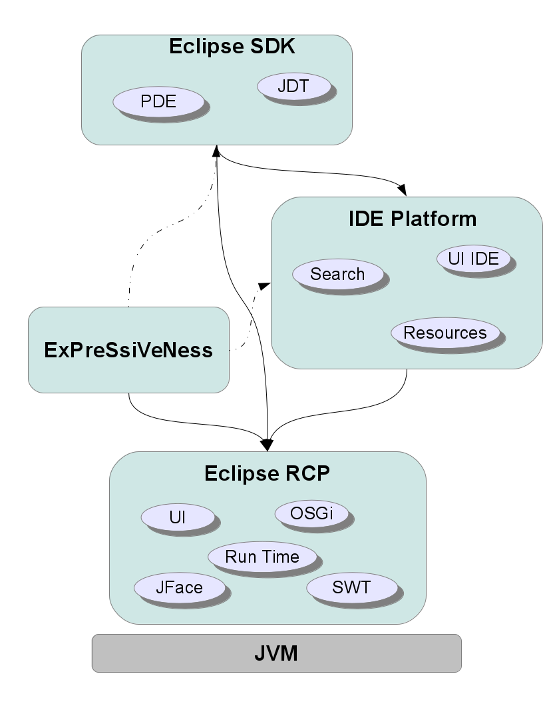
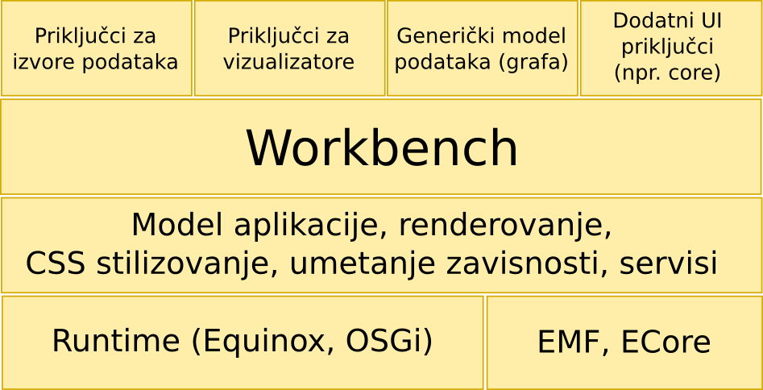
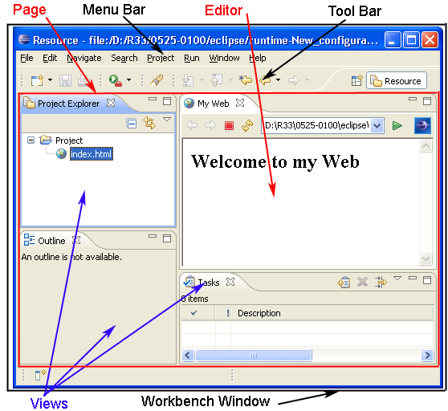

Eclipse RCP


Fakultet tehničkih nauka u Novom Sadu
Katedra za informatiku
Šta je Eclipse?
- Integrisano okruženje za razvoj softvera zasnovano na robusnom komponentnom modelu.
- Komponentni model se gradi kao proširenje komponentnog modela OSGi specifikacije kroz koncepte ekstenzija (Extensions) i ekstenzionih tačaka (Extension Points).
- Standardan korisnički interfejsa baziran na robusnim biblitekama SWT i JFace i konceptima Workbench-a, View-ova, editor-a itd.
- Podrška za veliki broj programskih jezika, sistem za kontrolu verzija, podsistema za izveštavanje, podrške za aplikativne server, editor za najrazličitije vrste fajlova ...
- Poseduje sistem za pronalaženje i instalaciju dodatnih komponenti (priključaka - plugins).
Šta je Eclipse RCP?
- Eclipse RCP predstavlja podskup priključaka eclipse za izgradnju proizvoljnih desktop aplikacija.
- Ko i na koji način koristi Eclipse RCP?
- Eclipse RAP tehnologija omogućava kreiranje web bazirane aplikacije koja se ponaša slično desktop aplikaciji uz minimalnu izmenu programskog koda.
Eclipse 4.x - e4
- Od 2012 nova linija razvoja.
- Ideja da se konsoliduju dobre stvari iz serije 3.x ali da se usput platforma modernizuje i omogući jednosrtavniji rad.
- Stari priključci mogu da rade preko sloja kompatibilnosti.
- Struktura aplikacije je opisana modelom aplikacije - The Application Model.
Model aplikacije
- Opisuje strukturu aplikacije. Baziran na EMF i ECore (platforma za (meta-)modelovanje).
- Može se modifikovati u vreme razvoja ali i u vreme izvršavanja (run-time).
- Može se proširivati i baziran je na upotrebi Dependency Injection obrasca.
- Prezentacija je razdvojena od suštine tako da se isti model može stilizovati na različite načine upotrebom eksternih fajlova i jezika sličnom CSS-u.
Sloj kompatibilnosti
- Eclipse 4.x implementira sloj kompatibilnosti tako da stari 3.x priključci mogu da rade bez izmena.
- Adapter dizajn obrazac.
Eclipse arhitektura
Eclipse arhitektura (Expressiveness)
Mehanizam proširenja platforme i saradnje komponenti
- Komponentni model je baziran na priključcima (plugins).
- Priključci registruju ekstenzione tačke (Extension Points) kao mesta na kome drugi priključci mogu umetnuti svoja proširenja (ekstenzije - Extensions).
- I ekstenzione tačke i ekstenzije se navode deklarativno u
plugin.xmlfajlu. - Prilikom startovanja platforme plugin.xml fajlovi iz svih
priključaka se čitaju i zatim je tim informacijama moguće
pristupiti putem
IExtensionRegistryinterfejsa i registra koji se dobija pozivomRegistryFactory.getRegistry()iliPlatform.getExtensionRegistry().
Skalabilnost i odloženo startovanje priključaka
- Priključci mogu dinamički da ispitaju svoja proširenja bez potrebe da se priključci koji nude proširenja startuju.
- Ovo omogućava dobru skalabilnost sa porastom broja priključaka. Na primer, priključci mogu da ubace nove stavke menija, dugmiće na toolbar-ovima pri čemu se zaista učitavaju i startuju tek kada korisnik izabere akciju.
Ekstenzione tačke (Extension Points - EP)
- Definišu se XML šemom i referencom iz plugin.xml fajla.
- Ekstenziona tačka definiše obavezne i opcione elemente koje klijent priključak mora da ugradi putem svoje ekstenzije.
- Editor za MANIFEST.MF i plugin.xml i editor za ekstenzione tačke (XML šeme) omogućavaju lako kreiranje EP-a.
- Element ekstenzione tačke pored osnovnih tipova (stringovi, integeri, fajlovi - npr. ikone) može biti i aktivan - Java klasa koja će se u određenom trenutku instancirati od strane priključka koji definiše EP.
Ekstenzije (Extensions)
- Ekstenzije se definišu u plugin.xml fajlu nad već postojećim ekstenzionim tačkama.
- Editor za MANIFEST.MF i plugin.xml fajlove omogućava jednostavno editovanje ekstenzija.
- Sve registrovane ekstenzione tačke moguće je izlistati i dobiti pomoć prilikom definisanja ekstenzije.
MANIFEST.MF i plugin.xml editor
- Editovanje MANIFEST.MF i plugin.xml fajla se obavlja integrisanim editorom koji na vizuelan način omogućava pregled i ažuriranje svih elemenata ovih fajlova.
Struktura Eclipse IDE korisničkog interfejsa
Eclipse RCP
- Eclipse Rich Client Platform
- Skup Eclipse priključaka koji čine platformu za razvoj Eclipse baziranih aplikacija
Kreiranje RCP aplikacija
Lars Vogel, Building Eclipse RCP applications based on Eclipse 4Eclipse Target Platform
Lars Vogel, Eclipse Target Platform - TutorialZadatak
- Preraditi rešenje zadatka za vizualizaciju šeme baze podataka da radi kao svežanj pod Equinox-om kao plugin pod Eclipse RCP-om.